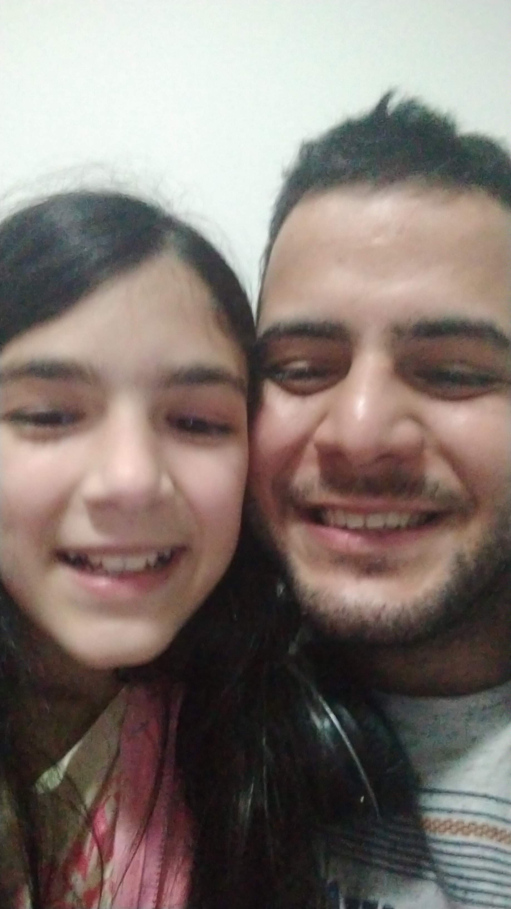

Esta é a pagina principal da Maisha
Meu nome é Maisha, tenho 14 anos, e a ginástica é mais do que uma paixão para mim - é uma parte fundamental da minha vida. Desde que me lembro, tenho explorado os limites do meu corpo através de movimentos graciosos e desafiadores. A ginástica me trouxe não apenas força física, mas também disciplina, foco e uma incrível sensação de realização. Além da ginástica, outra atividade que me empolga é trabalhar em um projeto especial com meu irmão mais velho, o Daniel, que tem 29 anos. Juntos, estamos criando um site incrível que não só reflete nossos interesses, mas também nos permite explorar e compartilhar nossas ideias de uma maneira divertida e criativa. Daniel é mais do que um irmão para mim; ele é meu "irmaozão", como gosto de chamá-lo. Sua experiência e conhecimento são valiosos para o nosso projeto conjunto. Enquanto eu trago a energia juvenil e as ideias frescas, Daniel contribui com sua sabedoria e habilidades técnicas. É uma combinação perfeita que nos permite aprender e crescer juntos. O site que estamos desenvolvendo não é apenas sobre ginástica; é um espaço onde podemos brincar, explorar diferentes temas, compartilhar nossas paixões e conectar-nos com outras pessoas que compartilham interesses semelhantes. Estamos animados com a possibilidade de criar algo único e significativo que vá além das fronteiras do virtual. Cada linha de código, cada design de página, é uma expressão de quem somos e do que amamos fazer. Este projeto não é apenas uma atividade criativa para preencher nosso tempo livre, mas uma jornada que nos ensina sobre colaboração, persistência e, claro, diversão. Mal posso esperar para compartilhar o resultado final do nosso trabalho com o mundo. Espero que todos possam sentir a alegria e a dedicação que investimos nesse projeto. Estamos construindo algo mais do que um site; estamos construindo memórias, aprendizado e uma conexão mais profunda entre irmãos. E, quem sabe, talvez inspiraremos outros a se aventurarem em projetos criativos com seus irmãos ou irmãs. Afinal, a magia acontece quando trabalhamos juntos para transformar nossos sonhos em realidade.